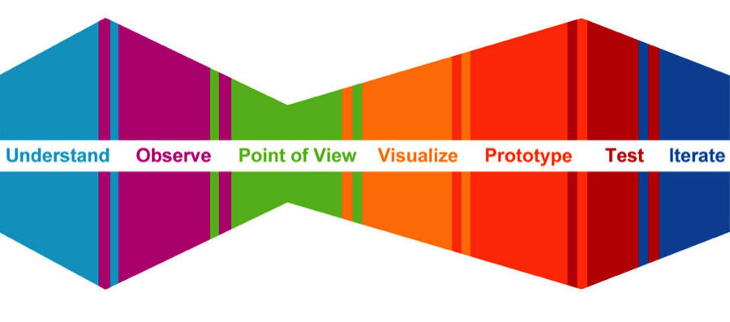
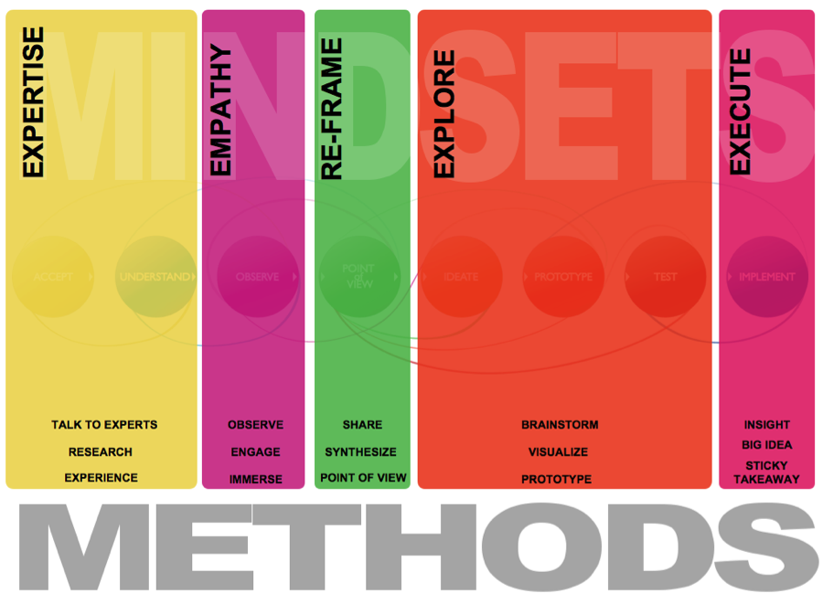

Week to Week Schedule
WEEK 0 (Prior to Start)
Tackling Hard Public Problems in a Complex World
In these introductory materials, we explore the crisis in governance, the challenges of solving 21st century problems using 20th century tools and strategies for using open and collaborative approaches to problem solving.
Before Class: - Watch Defining the Problem Alan Kantrow. Also watch Nicholas Fusso of the D-Prize invites your to apply to their next seed capital competition.
Before Class: - Do readings on open and collaborative approaches to problem solving.
To Do - Complete your profile for the program network; set up your team’s project page and blog; sign up for the GovLab Digest.
Submit - Complete and submit Course Informational Questionnaire including topic problem statement
Browse - General readings on private startups and entrepreneurship from Orbital Boot Camp
Readings
Introduction: Beth Simone Noveck – Defining Open Government; and Beth Simone Noveck – The Single Point of Failure (chapter 4 in Open Government, eds. Daniel Lathrop & Laurel Ruma) – Introduces the idea of collaborative democracy and the importance of collaborative problem solving.
Case Study: Theresa Bradley – El Hacker Cívico: Civic-Minded Techies Gain Sway with Government in Mexico and Beyond – An example of a technology-enabled approach to problem solving producing better, cheaper results than traditional methods.
Challenge / Critique: Teresa Scassa – Privacy and Open Government – How to respond to three broad privacy challenges raised by open government.
Next Frontier: Jen Pahlka and Clay Shirky - two TED talks on how technology is transforming how we govern. [video]
Twitter List: General Open Gov – Key figures exploring the broad field of open governance.


Source: http://hci.stanford.edu/dschool/resources/design-process/gallery.html
WEEK 1 (Sept 3-4)
Defining Your Problem
Before Class:
Readings
Introduction: Dwayne Spradlin – Are You Solving the Right Problem? – An introduction the challenge of adequately defining the problem. Berger, Warren. "Big Innovations Question the Status Quo. How Do You Ask the Right Questions?" Fast Company Co.Design, March 17, 2011; Cohen, Garry B. “Leadership: How to Ask the Right Questions.” Bloomberg Businessweek, September 29, 2009
Case Study: InnoCentive – InnoCentive Investigation of the Challenge Driven Innovation Platform at NASA – An exploration of InnoCentive’s work on properly framing the problem in prize-backed challenges.
Challenge / Critique: Case Foundation – Collaborative Innovation: Challenges of Designing & Administering Prizes [video] – A video on the challenge of problem definition in prize-backed challenges.
Next Frontier: If Only We Knew...how to define problems and ask questions to engage meaningfully with citizens – A discussion of key principles and considerations for citizen engagement initiatives.
Further Reading/Watching: Interview with David Hume
All-Group Workshop - From global warming to poverty, we have an urgent need to develop approaches to tackling hard problems that are actionable and effective. Taking a contemporary social problem, we trace the life cycle of public interest problem solving from start to finish in an effort to provide a roadmap for the program. We then focus on the process of helping you define your problem and assumptions about its causes, outlining initial hypotheses, and strategies for making the problem compelling to others, applying a lean and design-centered approach through. Defining your problem workshop with Dr. Alan Kantrow: The Maldives Post-Tsunami Case Study.

After the Workshop:
To do - Using problem definition exercises introduced in the workshop, refine your problem statement.
Post and Submit: Share the revised statement with your POD and teaching team for feedback. Schedule time to receive oral and written feedback on your problem definition. Blog about your topic.
Ask an expert: Based on your problem statement prepare an introductory email to get connected to your mentor / domain expert. Feedback from the teaching team. Check out:
- How To Ask People for Things Via Email: An 8-Step Program
- Introductions and the Forward Intro Email
- Cold Emails to Hot People
Public Problem Canvas
WEEK 2 (Sep. 10-11)
Know Thy Customer: Citizen-Centric Design Thinking for Public Problems
Before Class:
- Case Study: Case Commons' mission is to transform public sector human services through user-centered design & technology. (video, slide deck, and quote) We're pursuing this vision through the development of Casebook - the first collaborative, family-centered case management system for child welfare, enabling workers serving the most vulnerable families and children to be more effective and efficient via new web-based software tools.);
- Also from Andrew Cramer of Case Commons an article from TouchPoint Service Design Journal focused on design for social impact.
- Design thinking for public problems (slides with audio. Slides include intro and outro video available here and here) - Terry Winograd, Professor Emeritus of Computer Science, Stanford University. Professor Winograd's focus is on human-computer interaction design and the design of technologies for development. He founded and directed the teaching programs and HCI research in the Stanford Human-Computer Interaction Group, which recently celebrated it's 20th anniversary. He was a founding faculty member of the Hasso Plattner Institute of Design at Stanford (the "d.school") and on the faculty of the Center on Democracy, Development, and the Rule of Law (CDDRL).
- Also watch: Talking to Humans - Giff Constable, CEO of Neo, a global product innovation and agile development consulting company. Also availabe: Giff's book Talking to Humansin PDF.
- Notes on Designing Services for the Public Good - Eduardo Staszowksi, Assistant Professor of Design Strategies at Parsons The New School for Design in New York City.
Readings
Introduction: Tim Brown – Why social innovators need design thinking; Learning to Design: How I Bombed Art Class But Stlll Designed A Remarkable Website
Case Study: How Design Thinking Transformed Airbnb from a Failing Startup to a Billion Dollar Business; MindLab – Rethinking the format for EU Ministerial Council Meeting
Giff Constable 12 Tips for Early Customer Development Interviews and 11 Customer Development Anti-Patterns. Contact your course coordinator to request an advance PDF of Giff Constable’s new book Talking to Humans.
Challenge / Critique: Helen Walters – “Design Thinking” Isn’t a Miracle Cure, but Here’s How It Helps
Next Frontier: Christian Bason – Design-Led Innovation in Government; Jesper Christiansen – Applying human-centered design to public problems – Discussions from members of Denmark’s MindLab government innovation team on using design to improve governance.
Further Reading: The GovLab Selected Readings on Data Visualization; Design Action Research with Government: A Guidebook; Online Public Services and Design Thinking for Governments
All-Group Workshop about applying human-centered design to your project. We will workshop a version of Design Project Zero's “Wallet Project”developed by Stanford d.School.
After the workshop:
Do: Get outside and interview your target group of users. Refer to guidance from the d.school’s UNDERSTAND mixtape: Discovering insights via human engagement.
Post - a blog about your user profiles or ‘personae’ for your target group of citizens.
Post your problem statement (one per team) on this GovLab Academy Drive folder.
WEEK 3 (September 17-18)
Using Crowdsourcing for Problem Solving: Tapping Collective Intelligence and Expertise
Before Class:
Readings
Introduction: Jeff Howe – Crowdsourcing: A Definition; Daren C. Brabham – Crowdsourcing as a Model for Problem Solving; Crowdsourcing GovLab Wiki – Pieces introducing the key concepts of crowdsourcing widely and targeted crowdsourcing to be selected for you by the Crowdsourcing Advisor.
Case Study: Beth Simone Noveck - Bridging the Knowledge Gap - In Search of Expertise in Democracy Journal Fall 2014 article on Smarter Crowdsourcing.
Challenge / Critique: Christopher G. Harris – Dirty Deeds Done Dirt Cheap: A Darker Side to Crowdsourcing; Mark Liberstein, et al – Crowdsourcing and Intellectual Property Issues – Pieces describing critiques to the wide use of crowdsourcing, including a lack of meaningful compensation for participants and intellectual property concerns.
Next Frontier: William H. Dutton – Networking Distributed Public Expertise: Strategies for Citizen Sourcing Advice to Government; Max H. Sims, et al – Crowdsourcing medical expertise in near real time – Pieces discussing the opportunity related to more targeted, expert-focused crowdsourcing to improve governance and healthcare.
Twitter Lists: Smarter Governance
Further Reading/Watching: The GovLab Selected Readings on Crowdsourcing Expertise; Beth Noveck on Crowdsourcing [videos]: Part 1, Part 2, Part 3; Paul Lewis – Citizen Journalism; Chris Baraniuk – Power Politechs; Alex Howard – What Can 21st Century Open Government Learn from Open Source, Open Data, Open Innovation and Open Journalism?; Alex Howard – How Governments Deal with Social Media; Francois Gray – Citizen Science to Open Science [video]; Crowdsourced Ideas Make Participating in Government Cool Again; Big Think Interview with James Surowiecki [video]; HowCast: Lorenzo Delesques on Empowering Citizens to Monitor Development Projects in Afghanistan [video]; ExpertNet: Disclosing Expertise Research Agenda and Project Plan; Gov 3.0 Hackpads: Crowdsourcing and Collaboration, Crowdsourcing Ideas and Crowdsourcing Tasks
All-Group Workshop - In this workshop, we delve into different approaches to crowdsourcing and to crowdsourcing smartly using expert networking to target relevant audiences. We use the workshop to apply open and collaborative approaches to tackling your challenges and focus on identifying the audiences you want to participate and how to engage them. We work through an exercise of designing a crowdsourced approach for smarter policymaking for the White House.
After the workshop:
Post: Do a blog post on how the study cases offered to you by the advisor may be applicable to what you are looking to achieve and if and how you decide to use crowdsourcing as a tool for your project. Consider a) how will you incentivize your crowd for participation (your previously developed personae); b) how will you control the quality of the crowd participation, and; c) through wich communication technology or platform will your crowd participate.
Ask an expert: With the help of the teaching team, schedule a meeting / call / skype about your project. The goal is to identify other projects and potential collaborators focused on the same problem.
Optional interlude - Unhangouts with public entrepreneurs - live conversation with Rohan Silva, former senior advisor 10 Downing Street
WEEK 4 (September 24-25)
Using Data for Problem Solving
Before Class:
- Watch: Matt Hampel, Local Data - Building a data-based venture.
- Watch: Open source explained in lego.
- Watch: History of adoption of open source software in US government.
Readings
Introduction: James Manyika, et al – Big Data: The Next Frontier for Innovation, Competition, and Productivity; Rufus Pollock – Forget big data, small data is the real revolution.
Case Study: Maxat Kassen – A promising phenomenon of open data: A case study of the Chicago open data project – A case study exploring the impacts of Chicago’s open data portal.
Challenge / Critique: danah boyd and Kate Crawford – Six Provocations for Big Data – A paper describing key issues related to big data, including the creation of a new digital divide and and misleading claims of objectivity.
Next Frontier: Alex (Sandy) Pentland – Reinventing Society in the Wake of Big Data; Deborah Estrin – Small data can show big health changes [video]; Beth Simone Noveck and Daniel L. Goroff – Information for Impact: Liberating Nonprofit Sector Data (pages 2-7, 8-12, 19-23, 30-36) – Pieces describing areas/sectors of future impact for big, small and open data.
Twitter Lists: Open Data Governance; Technology
Further Reading/Watching: Gov 3.0 HackPads: Getting Better Expertise In: Big and Small Data, Open Data Governance; White House – Informing Consumers through Smart Disclosure; White House – Smart Disclosure and Consumer Decision Making; Smarter Information, Smarter Consumers; GovLab Academy: Open Data [video]; Beth Noveck on Open Data [video]; Joel Gurin on Open Data: Part 1, Part 2; GovLab Selected Readings: Data and Its Uses for Governance; Leif Percifield Interview [audio]; Peter Levin Interview [audio]; David G. Robinson, et al – Government Data and the Invisible Hand; The GovLab Index: Open Data
Discussion - about data-driven problem solving. In this week’s small group discussions, the goal is to understand big, small and open data and to identify how data-led approaches might apply to your own projects. In a group exercise working with Public Labs, you will consider how data could be used to ameliorate a contemporary challenge and, at your option, get out and learn how to do some balloon mapping, layering the data you collect onto a map.
After the discussion:
Post a blog which summarizes the results of the exercise and identifies options for using data in your own project.
Additional office hours from open data experts Joel Gurin, Stefaan Verhulst, and Matt Hampel available.
WEEK 5 (Oct 1-2)
One-on-one project check-in sessions - WE WILL NOT MEET DURING CLASS TIME.
We are holding one-on-one mentoring sessions instead of class. We'll be at the GovLab in Brooklyn for those who want to meet with us in person. For those who cannot meet in Brooklyn,we'll be available for online google hangouts. Please keep in mind that if you are working as part of a team, please try your best to schedule a meeting that the whole team can attend.
The link where you can schedule is here calendly.com/luis--3. Please schedule by Sunday so we can prepare for your meetings with you.
We understand that we've given a lot of content for you to review over the past few weeks. Our hope is that this week will give you more space to review more, reflect, and apply to the projects that you are developing.
Discovering Insights: Rapid Results Research Methods

Source: http://hci.stanford.edu/dschool/resources/design-process/gallery.html
Before Class:
- How do you get smart quickly about your issue? How do you stay in the know? (Video) Stefaan Verhulst and Andrew Young of the GovLab.
- How to get the most from NYU Library Resources – fast (Video aimed at NYU enrolled students) - Samantha Guss NYU Data Services Librarian.
Readings
Introduction: GovLab Academy: Crowdsourcing Data, Crowdsourcing Tasks – Introductions to innovative, crowdsourced solution mapping techniques.
Case Study: The GovLab – Reimagining Governance in Practice: Benchmarking British Columbia's Citizen Engagement Efforts – A collection of case studies on citizen engagement efforts meant to discover new solutions.
Challenge / Critique: Tanya Aitamurto – The Promise of Idea Crowdsourcing: Benefits; Contexts, Limitations – A white paper highlighting contexts where crowdsourcing is not likely a viable option for expanding the solution space.
Next Frontier: Clay Shirky on Crowdsourcing Opinions: Part 1, Part 2 – Video discussions of examples where citizens contributed opinions and ideas for new solutions to public challenges.
Further Reading/Watching: Writing a Lit Review Presentation; Gov 3.0: Example Student Letter to Experts Asking for Advice; Richard H. Thaler – Show Us the Data (It's Ours, After All); The GovLab Selected Readings: Crowdsourcing Tasks and Peer Production, Crowdsourcing Data; Clay Shirky – Examples of Crowdsourcing Opinions; A Snapshot of the GovLab Wiki: Case Studies on Collaboration, Crowdsourcing, Expert Networking and Local Government Innovation; Juliana Freire on Data Visualization: Part 1, Part 2; Online Tools Every Community Should Use; Online Tools for Engaging Citizens in the Legislative Process; Citizen Engagement: 3 Cities and Their Civic Tech Tools; Accountability Technologies – Tools for Asking Hard Questions; Civic Works Project Translates Data into Community Tools;
Discussion - You will learn how to carry out an initial field scan of academic literature, social media and other sources and learn from pros about both in-depth and quick techniques for getting smarter about your field and who is in it. Learning with librarians, you will identify key data sets, primary and secondary resources and the key data points you will need to make a persuasive case for your problem.
After the discussion:
Create a map of your issue - do your own literature review and use the tools you have been learned to create a map identifying the key actors, policies and events (past and future) interacting with issue. Create a Paper.li for your project to stay on top of developments in the field.
Do: submit a 'state of the issue' map, a summary of your literature review and a directory of the key people in the field.
Have you tweeted about your project? Blogged? Discussed with friends? Met with mentors and experts?
WEEK 6 (Oct 8-9)
This week we will be IN CLASS discussing researching with Stefaan Verhulst and Andrew Young, both researchers at the GovLab.
The slide deck that they will be using is attached here. If you have five minutes before class, please sign up for Coggle, watch the tutorial video on the page and take a few minutes to replicate the three mindmap templates in the deck.
Next week we will meet during regular class hours but ONLINE during which we'll be discussing working with institutions.
MOVED TO NEXT WEEK: Working With and Around Institutions
Before Class:
- Sign up for Coggle, watch the video tutorial and replicate the Milieu, Actors and Problem mindmaps.
WEEK 7 (October 15-16)
Working With and Around Institutions
Before Class:
- Listen: Beth Noveck Brief Intro on Hacking Institutions
- Watch: Hacking Bureaucracy (Video) - Mike Bracken, Executive Director of Digital in the UK Cabinet Office and head of the Government Digital Service (GDS). Former Director of Digital Development at Guardian News & Media and co-founder of Mysociety.org;
- Hacking Procurement - Clay Johnson, CEO of the Department of Better Technology. Co-Founder, Blue State Digital, Former Director of Sunlight Labs and inaugural Presidential Innovation Fellow leading the RFP-EZ project, a federal experiment in procurement innovation;
- Hacking the No Machines - Steve Midgley, Mixrun, Former Deputy Director Education Technology, Department of Education;
- How to file a FOIA request - Media Freedom and Information Access Clinic, Yale Law School.
Readings
Introduction: Primer on Legal Impediments (Jill Raines, The GovLab)
Next Frontier: Laura Anthony – San Ramon Fire Dept. Launches App for CPR Help; Montana Cherney – There's a Hero in All of Us; Hollie Russon Gilman – New York's Big Participatory Budgeting Moment.
Further Reading/Watching: Gov 3.0 Hackpad: Devolved Governance: Participatory Budgeting; Examples of Participatory Budgeting; The Experience of Participative Budget in Porto Alegre Brazil; Impact Story: Al Kags: Open Duka, Kenya [video]; Impact Story: Arkka Dhiratara: LAPOR, Indonesia [video]; Impact Story: Richard Bon Moya: eTAILS, Philippines [video]; Hollie Gilman on Participatory Budgeting [videos]: Part 1, Part 2, Part 3, Part 4;
All-Group Workshop - In this session, we focus on strategies for using institutions and routing around institutions to improve outcomes. In what ways can we make use of government, NGO’s, including non-profits and foundations, and market actors to scale efficacy? When does avoiding such collaboration increase the likelihood of success? Do I start my own or do I collaborate? Whom do I have to convince to do what to achieve my goals?
After the workshop:
Do: Identify institutions you may wish to partner with and set of relevant interviews.
WEEK 8 (October 22-23)
If We Build It, Will They Come? Incentives for Participation
Before Class:
- Watch and read Lessons from the social sciences: Creating incentives for participation: prizes, challenges and nudges - Stefaan Verhulst, The GovLab-. (video)
Readings
Introduction: McKinsey & Company – “And the winner is…” Capturing the promise of philanthropic prizes – A report on the use of prize-backed challenges to spur engagement and innovation in the world of philanthropy.
Case Study: Kevin C. Desouza – Challenge.gov: Using Competitions and Awards to Spur Innovation; – A paper on a number of challenges related to default policy options, including a lack of “stickiness” and the tendency of those opting out of projects being those most likely to benefit from them.
Next Frontier: White House – Identifying Steps Forward in Use of Prizes to Spur Innovation; Courtney Subramanian – ”Nudge” Back in Fashion at White House – Pieces describing the development of a US Nudge Unit.
Twitter List: Behavioral Science / Psychology
Further Reading/Watching: Matthew Darling, et al – The Nature of the BEast: What Behavioral Economics Is Not; Moving the crowd at iStockphoto: The composition of the crowd and motivations for participation in a crowdsourcing application; Collaborative Innovation: Cristin Dorgelo Interviewed by Gretchen Crosby Sims [video]; Stefaan Verhulst on Prize-Backed Challenges [videos]: Part 1, Part 2, Part 3; Steve Hodas on the Gap App Challenge [videos]:Part 1, Part 2, Part 3; HowCast: Marija Novkovic on Leading Data-Driven Innovation Challenges in Montenegro [video]; Gov 3.0 HackPad: Prize-Backed and Grand Challenges; Michael Carroll on Hackathons: Part 1, Part 2, Part 3; Are We There Yet? And How Will We Know Whether “Our Challenge” Worked?; The Impact of Innovation Inducement Prizes; Government, Foundations Turn to Cash Prizes to Generate Solutions; Continued Progress: Engaging Citizen Solvers Through Prizes; Prizes and Productivity: How Winning the Fields Medal Affects Scientific Output; Interview with Jon Frederickson; Alex Laskey – How Behavioral Science Can Lower Your Energy Bill [video]; Behavioral Design: A New Approach to Development Policy
Small group discussion on incentives. In our weekly session, we’ll talk about which techniques work better under which circumstances for tackling hard problems. How do I get people to show up? What is the difference between intrinsic and extrinsic motivators? Cash prizes vs. the t-shirt?
Optional interlude - Unhangouts (what is this? can we add a link to a definition?) with public entrepreneurs - live conversation with Peter Levine, former CTO, Veterans Affairs and Creator of the Blue Button
WEEK 9 (October 29-30)
The Power of Persuasion - Convincing your Audience
Before Class:
- Watch and Read - Successful presentations for public interest audiences - identifying whom you are persuading and what you want them to do.
Readings
Suggested Reading/Watching: Gov 3.0: Killer Memo; Gov 3.0: Google Hangout on Memos [video]; Maria Popova – How to Give a Great Presentation: Timeless Advice from a Legendary Adman
All-Group Workshop on effective presentation with Dr. Alan Kantrow, The GovLab.
After the workshop:
Do:Prepare and share first draft of pitch deck with POD and teaching staff. Start storyboarding your video.
WEEK 10 (Nov 5-6)
Testing, Piloting and Measuring Your Impact
Before Class:
- Watch and Read From faith-based to evidence-based - Jon Baron, Evidence-Based Policy Coalition and Shelley Metzenbaum, The Volcker Alliance.
Readings
Further Reading: Effective Metrics for Measurement and Target Setting in Online Citizen Engagement; Enhance Accountability by Crowdsourcing Oversight & Developing Metrics for Success; Measuring Internet Activity: A (Selective) Review of Methods and Metrics; Metrics for Government Reform; The Quiet Movement to Make Government Fail Less Often, Randomiseme.org.
Small Group Discussions on metrics, piloting and testing. Developing your project timeline and pilot plan.
After the discussion
Do:Refine your metrics. Add a piloting and testing strategy to your project plan.
Optional interlude - Unhangouts with public entrepreneurs - live conversation with Kumar Garg, the White House
WEEK 11 (November 12-13)
Securing Resources for Your Project
Before Class::
- Crowdfunding video and readings - Charles Adler, Co-Founder Kickstarter;
- How to write a successful grant or foundation proposal, creating the story of your project to meet the needs of different audiences - Tom Kalil, The White House. Convening video and readings.
- Case Study: Pathomap $757 (out of $10,000 goal) v. uBiome $351,00 (out of $100,000 goal)
Readings
Introduction: Peter Baeck and Liam Collins – Working the Crowd: A Short Guide to Crowdfunding and How It Can Work for You – An introduction from Nesta on the use of crowdfunding in a variety of contexts.
Case Study: Jason Best, et al – How Crowdfund Investing Helps Solve Three Pressing Socioeconomic Challenges; Abbey R. Stemler – The JOBS Act and Crowdfunding: Harnessing the Power – and Money – of the Masses; Oyler: a documentary film; Sense: Know More. Sleep Better – Three interesting projects being funded through Kickstarter.
Further Reading/Watching: Primer on Crowdfunding; The Advent of Crowdfunding Innovations for Development; UK Startup: Spacehive Brings Civic Crowdfunding Across the Pond; Brian Meece on Crowdfunding [videos]: Part 1, Part 2; The GovLab Selected Readings on Crowdsourcing Funds; CrowdingIn Directory
All-Group Workshop with creators of successful crowdfunding pitches. After - Create a fundraising strategy for your project, if appropriate. Develop persuasive strategy including your project webpage.
After the workshop
Do: Begin work on project webpage
WEEK 12 - (Nov 19-20)
Skills Share - Mockups, Prototypes, Videos, Budgets and More
Small Group Discussion:What are the skills you still need to finish your project? This week you will choose between a variety of skills building sessions. These might include a session on Balsamiq mockups or a session on identifying and overcoming legal impediments. The menu of offerings to be designed based on participant need and demand.
Have you tweeted about your project? Blogged? Discussed with friends? Met with mentors?
Nov 26-27
THANKSGIVING - Off
WEEK 13 - (Dec 3-4) OPTIONAL IF ON A 12-WEEK CALENDAR
Honing your Pitch
POD - Deliver pitches with peers and receive feedback on project materials.
WEEK 14 (Dec 10-11)
DEMO DAY
All-Group Workshop - Demo Day. Pitch your project to your peers and an invited audience. Share your learnings.
Post project materials by the last day of NYU and MIT’s exam week - Friday December 19th.